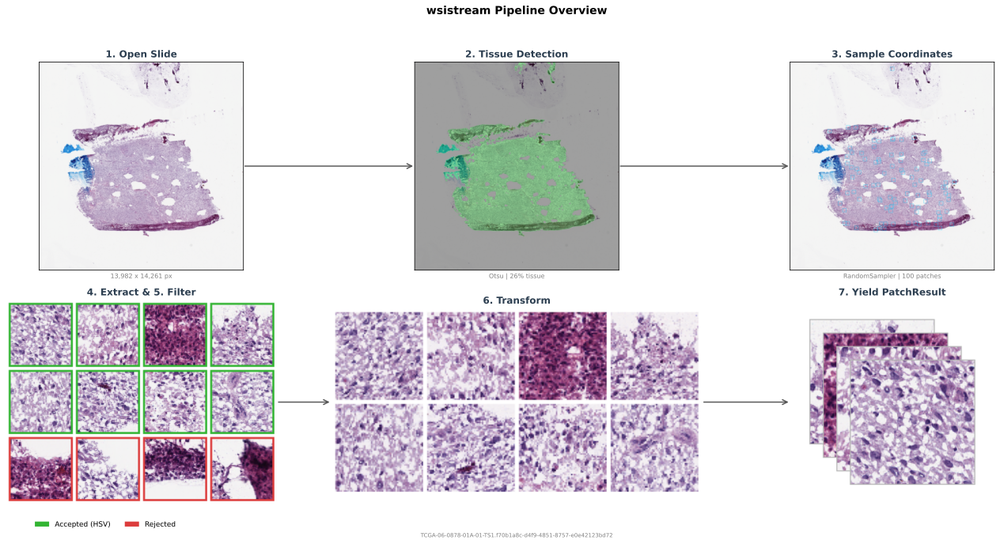

Architecture
wsistream uses a pipeline of pluggable components. Each component is defined by an abstract base class with a single method to implement.

The pipeline flow
For each slide, the pipeline executes the following steps:
- Open the slide via
SlideHandlewith the configured backend - Thumbnail: generate a low-resolution overview of the slide
- Tissue detection: run the
TissueDetectoron the thumbnail to produce a binaryTissueMask - Sampling: pass the slide and mask to the
PatchSampler, which yieldsPatchCoordinates - Extraction: read each patch from the slide at the specified pyramid level
- Filtering: run the
PatchFilteron the extracted patch -- accept or reject - Transform or views: apply the
PatchTransformchain, or produce multiple named views - Yield: produce a
PatchResultcontaining the image, coordinates, tissue fraction, and metadata
Steps 3 and 6 are both tissue/quality checks, but at different resolutions:
- TissueDetector (step 3): coarse, runs once per slide on a low-resolution thumbnail.
- PatchFilter (step 6): fine-grained, runs on every extracted patch. Sees actual pixel content at the sampled resolution. This is where Midnight's per-tile HSV check belongs (Karasikov et al., 2025).
Pool-based slide interleaving
The PatchPipeline maintains a pool of simultaneously open slides (controlled by pool_size) and round-robins across them, ensuring patches from different slides are interleaved in the output stream. By default, one patch is read per slide before advancing (patches_per_visit=1); set higher for better I/O locality on network filesystems.
Each slide has a patches_per_slide budget. Once a slide exhausts its budget, it is closed and replaced by the next slide from the queue. This prevents any single slide from dominating the stream.
When cycle=True, the slide queue is refilled after all slides have been processed, producing an infinite stream that cycles over the entire corpus. This is the intended mode for FM training.
graph LR
subgraph Pool1["Pool 1"]
direction LR
r1["A B C D"] --> r2["A B C D"] --> r3["A B C D"]
end
subgraph Pool2["Pool 2"]
direction LR
r4["E F G H"] --> r5["E F G H"] --> r6["E F G H"]
end
r3 -->|"close & open"| r4Example with pool_size=4 and patches_per_slide=3: each box is one round-robin pass yielding one patch per slide. After 3 patches from each slide, the pool rotates.
I/O locality with patches_per_visit
By default, the pipeline reads one patch per slide before advancing to the next (patches_per_visit=1). On network filesystems (NFS, Lustre, GPFS), this causes frequent cache misses because every read hits a different file. Setting patches_per_visit to a higher value (e.g., 8-16) reads multiple consecutive patches from the same slide before round-robining, keeping the OS file cache warm:
pipeline = PatchPipeline(
...,
pool_size=20,
patches_per_slide=500,
patches_per_visit=10, # read 10 patches before advancing to next slide
)
This trades some interleaving granularity for significantly better I/O throughput. The total number of patches per slide is unchanged — only the order within the pool changes.
Data types
The pipeline produces PatchResult objects. Here are the key data types:
PatchResult -- one extracted patch with all its context:
| Field | Type | Description |
|---|---|---|
image |
np.ndarray or None |
Patch pixels when transforms are used. (H, W, 3), uint8 (or float32 after normalization). |
views |
dict[str, np.ndarray] or None |
Named multi-view outputs when views are configured. |
coordinate |
PatchCoordinate |
Where this patch came from. |
tissue_fraction |
float |
Fraction of the patch region covered by tissue, in [0, 1]. |
slide_metadata |
SlideMetadata or None |
Dataset-specific metadata (when a DatasetAdapter is configured). |
PatchCoordinate -- location of a patch within a slide:
| Field | Type | Description |
|---|---|---|
x, y |
int |
Top-left corner in level-0 pixel coordinates. |
level |
int |
Pyramid level the patch was read from. |
patch_size |
int |
Width and height of the patch at the target level. |
mpp |
float or None |
Effective microns per pixel of the patch. |
slide_path |
str |
Path to the source slide. |
SlideMetadata -- dataset-specific information (populated by a DatasetAdapter):
| Field | Type | Description |
|---|---|---|
slide_path |
str |
Path to the slide. |
dataset_name |
str |
Name of the dataset (default "unknown"). |
patient_id |
str or None |
Patient identifier. |
tissue_type |
str or None |
Tissue type. |
cancer_type |
str or None |
Cancer type (e.g., TCGA-BRCA). |
sample_type |
str or None |
Sample type (e.g., Primary Solid Tumor). |
extra |
dict |
Additional fields specific to the dataset. |
Built-in components
| Component | Implementations |
|---|---|
| Backends | OpenSlideBackend (C-based), TiffSlideBackend (pure Python, cloud-compatible via fsspec) |
| Tissue Detectors | OtsuTissueDetector, HSVTissueDetector, CLAMTissueDetector, CombinedTissueDetector (logical AND of multiple detectors) |
| Samplers | RandomSampler (rejection sampling, supports target_mpp), GridSampler (exhaustive grid, configurable stride), MultiMagnificationSampler (samples across multiple pyramid levels), ContinuousMagnificationSampler (crop-and-resize at continuously varying magnification) |
| Filters | HSVPatchFilter (per-tile HSV pixel check, Midnight-style) |
| Transforms | HEDColorAugmentation, RandomFlipRotate, ResizeTransform, NormalizeTransform, AlbumentationsWrapper, ComposeTransforms |
| Views | ViewConfig, RandomResizedCrop for multi-view and multi-crop outputs |
| Dataset Adapters | TCGAAdapter (parses TCGA barcodes for patient ID, cancer type, sample type) |
Configuration
PatchPipeline(
slide_paths="/data/tcga", # directory or list of file paths
backend=OpenSlideBackend(), # how to read slides
tissue_detector=..., # what is tissue vs. background (on thumbnail)
sampler=..., # where to extract patches
patch_filter=..., # accept/reject extracted patches (on actual pixels)
transforms=..., # augment accepted patches
views=..., # optional multi-view outputs (mutually exclusive with transforms)
shared_transforms=..., # optional transform applied once before per-view processing
dataset_adapter=..., # attach dataset-specific metadata (e.g., TCGA)
thumbnail_size=(2048, 2048),# resolution for tissue detection
pool_size=8, # slides open simultaneously
patches_per_slide=100, # per-slide budget before rotation
patches_per_visit=1, # patches per slide before round-robin (increase for I/O locality)
slide_sampling="sequential",# "sequential" or "random" slide order
cycle=False, # infinite cycling over slides
replacement="with_replacement", # "without_replacement" for no repeated coords per slide
seed=None, # random seed for slide-level shuffling
)
Adding new components
Every component follows the same pattern: subclass the base, implement one method.
from wsistream.tissue.base import TissueDetector
class MyDetector(TissueDetector):
def detect(self, thumbnail, downsample=(1.0, 1.0)):
return ... # boolean mask
from wsistream.sampling.base import PatchSampler
class MySampler(PatchSampler):
def sample(self, slide, tissue_mask):
yield ... # PatchCoordinate
from wsistream.filters.base import PatchFilter
class MyFilter(PatchFilter):
def accept(self, patch):
return ... # True to keep, False to discard
from wsistream.transforms.base import PatchTransform
class MyTransform(PatchTransform):
def __call__(self, image):
return ... # transformed image
from wsistream.datasets.base import DatasetAdapter
class MyAdapter(DatasetAdapter):
def parse_metadata(self, slide_path):
return ... # SlideMetadata